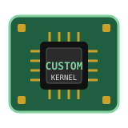

Raspberry Pi 4 custom kernel demo
Image @@IMG_NAME@@ built @@IMG_DATE@@ with pi-gen. This page is served by nginx from the image itself.
Kernel built into this image
- Release
- @@KERNEL_RELEASE@@
- Boot file
- /boot/firmware/@@KERNEL_IMAGE@@
- Source
- raspberrypi/linux @@KERNEL_BRANCH@@
- Commit
- @@KERNEL_COMMIT@@
Live from the board
Waiting for /sysinfo.json…
- uname -r
- uname -v
- Model
- Host
- IP
- Uptime
- Load
- Memory free
- CPU temp
- /proc/config.gz
Verify it yourself
ssh pi@pi-demo.local uname -r # expect @@KERNEL_RELEASE@@ zcat /proc/config.gz | grep LOCALVERSION grep kernel= /boot/firmware/config.txt curl -s http://pi-demo.local/sysinfo.json